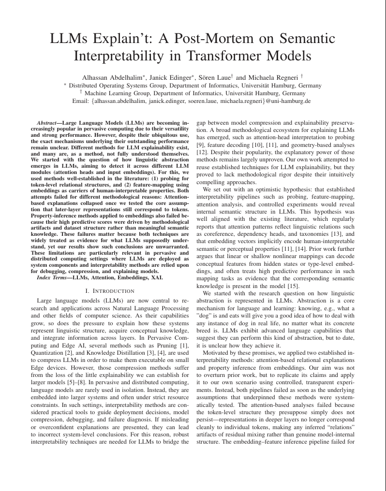
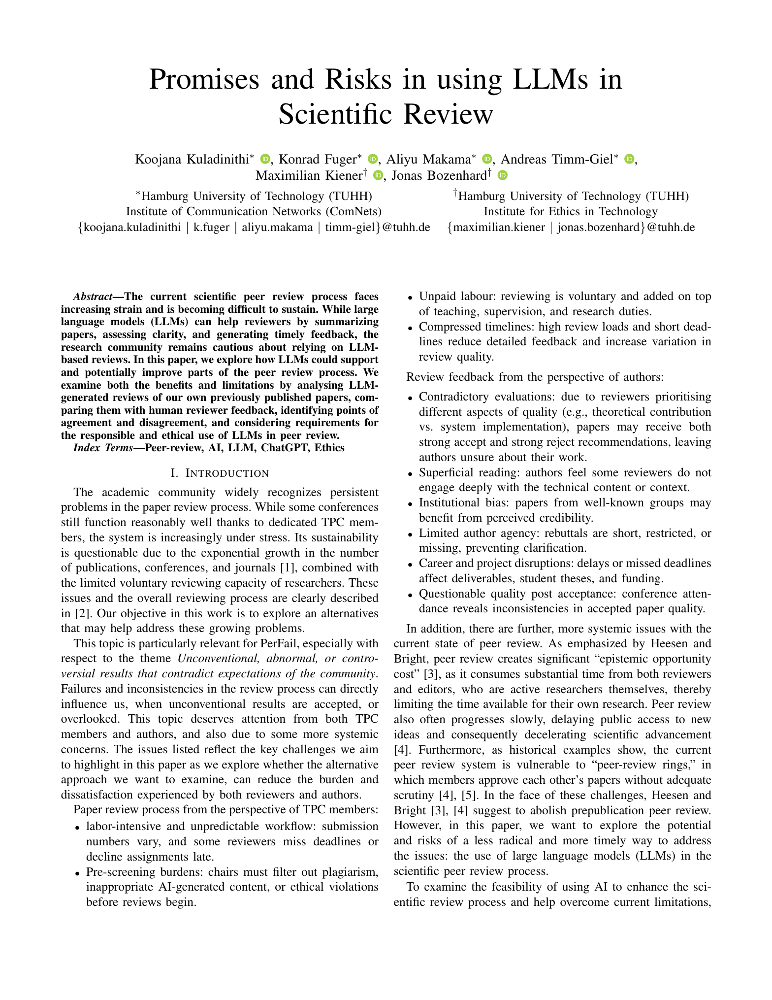
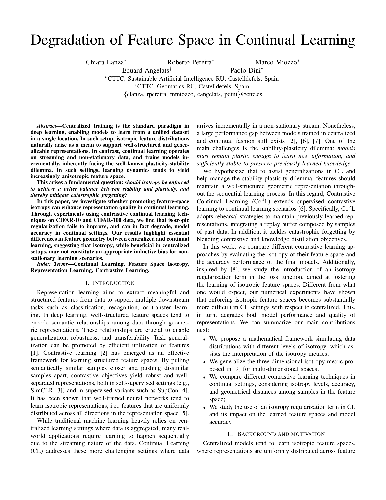
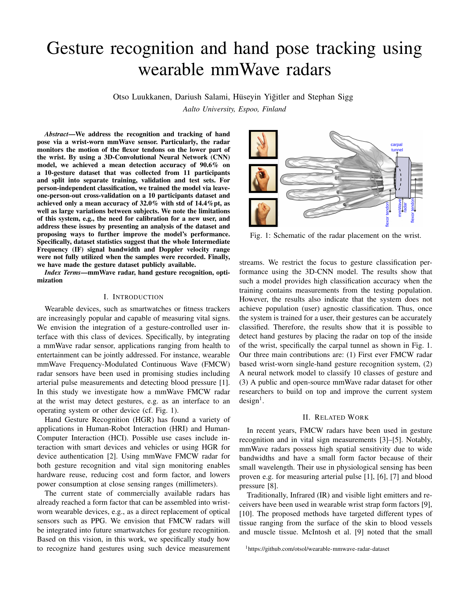
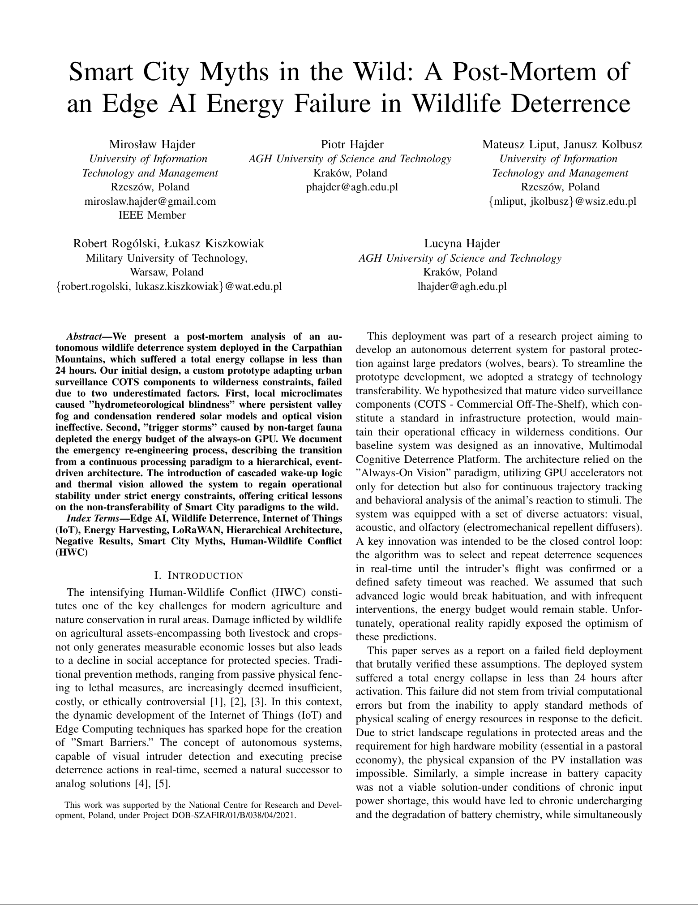

ABOUT
Not all research leads to fruitful results, trying new ways or methods may surpass the state of the art, but sometimes the hypothesis is not proven or the improvement is insignificant. But failure to succeed is not failure to progress and this workshop aims to create a platform for sharing insights, experiences, and lessons learned when conducting research in the area of pervasive computing.
While the direct outcome of negative results might not contribute much to the field, the wisdom of hindsight could be a contribution itself, such that other researchers could avoid falling into similar pitfalls. We consider negative results to be studies that are run correctly (in the light of the current state of the art) and in good practice, but fail in terms of proving of the hypothesis or come up with no significance. The “badness” of the work can also come out as a properly but unfittingly designed data collection, or (non-trivial) lapses of hindsight especially in measurement studies.
We took the insights and discussion from last year and wrote a paper about the collected information. You can read the published manuscript in IEEE Pervasive Computitng here.
PerFail also has been featured in the Nature feature article "Illuminating 'the ugly side of science': fresh incentives for reporting negative results". You can read the article here.
CALL FOR PAPERS
The papers of this workshop should highlight lessons learned from the negative results. The main outcome of the workshop is to share experiences so that others avoid the pitfalls that the community generally overlooks in the final accepted publications. All areas of pervasive computing, networking and systems research are considered. While we take a very broad view of “negative results”, submissions based on opinions and non-fundamental circumstances (e.g. coding errors and “bugs”) are not in scope of the workshop as they do not indicate if the approach (or hypothesis) was bad.
The main topics of interests include (but are not limited to):
- Studies with unconvincing results which could not be verified (e.g. due to lack of datasets)
- Underperforming experiments due to oversights in system design, inadequate/misconfigured infrastructure, etc.
- Research studies with setbacks resulting in lessons learnt and acquired hindsights (e.g. hypothesis with too limiting or too broad assumptions)
- Unconventional, abnormal, or controversial results that contradict expectations of the community
- Unexpected problems affecting publications, e.g. ethical concerns, institutional policy breaches, etc.
- “Non-publishable” or “hard-to-publish” side-outcomes of the study, e.g . mis-trials of experiment methodology/design, preparations for proof-of-correctness of results, etc.
We also welcome submissions from experienced researchers that recounts post-mortem of experiments or research directions they have failed in the past (e.g. in a story-based format). With this workshop, our aim is to normalize the negative outcomes and inherent failures while conducting research in pervasive computing, systems and networking, and provide a complementary view to all the success stories in these fields.
Important Dates*
| Paper submission: | ||
| Author Notification: | ||
| Camera-ready Submission: | February 2, 2026 | |
| Workshop Date: | March 16, 2026 |
| Paper submission: | |
| Author Notification: | |
| Camera-ready Submission: | February 2, 2026 |
| Workshop Date: | March 16, 2026 |
November 17 December 7, 2025 (extended)
January 5 January 15, 2026 (extended)
February 2, 2026
Workshop Date:
March 16, 2026
* All dates are AoE (check it here).
Please note that the camera-ready submission deadline is final and non-negotiable. No extensions will be granted.
TECHNICAL PROGRAM
Claudio Cicconetti (PhD from University of Pisa in 2003) is a Senior Researcher at IIT-CNR, where he leads the |Quantum⟩ Lab. He has coordinated and contributed to numerous national and international R&D initiatives, receiving awards such as the Facebook Networking research grant (2021) and the Quantum Internet Application Challenge (2023). From 2009 to 2018, he held R&D roles in the industry. He participates in the editorial board of Computers Networks, IET Quantum Communication, and Computers and Electrical Engineering. He has co-authored over 80 publications and two international patents.





REGISTRATION
Each accepted workshop paper requires a full PerCom registration (no registration is available for workshops only). Otherwise, the paper will be withdrawn from publication. The authors of all accepted papers must guarantee that their paper will be presented at the workshop. Papers not presented at the workshop will be considered as a "no-show" and it will not be included in the proceedings.
Registration link: here
COMMITTEES
Organizing Committee

Ella Peltonen University of Oulu

Malte Josten University of Duisburg-Essen

Peter Zdankin University of Duisburg-Essen

Tanya Shreedhar TU Delft
Steering Committee

Nitinder Mohan TU Delft
Technical Program Committee

Ambuj Varshney National University of Singapore

Asanga Udugama Universität Bremen

Daniela Nicklas University of Bamberg

Gürkan Solmaz NEC Labs Europe

Isabel Wagner University of Basel

Jan S. Rellermeyer University of Hannover

Jon Crowcroft University of Cambridge

Jörg Ott Technical University of Munich

Jussi Kangasharju University of Helsinki

Lik-Hang Lee The Hong Kong Polytechnic University

Oliver Gasser IPinfo

Roman Kolcun University of Cambridge

Sandip Chakraborty Indian Institute of Technology

Simone Ferlin Red Hat

Stephan Sigg Aalto University

Torben Weis University of Duisburg-Essen